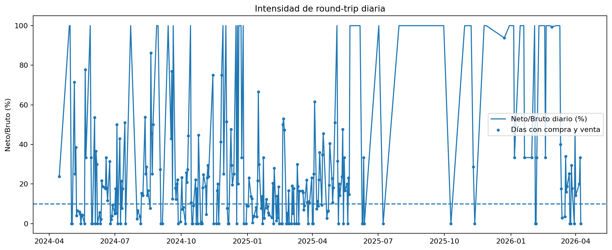
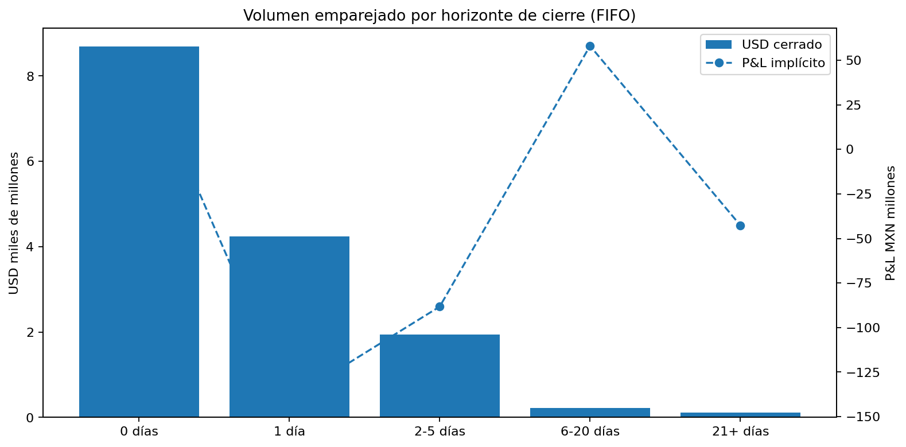
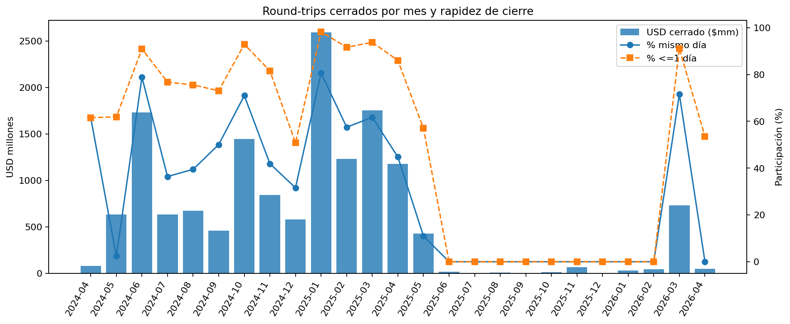
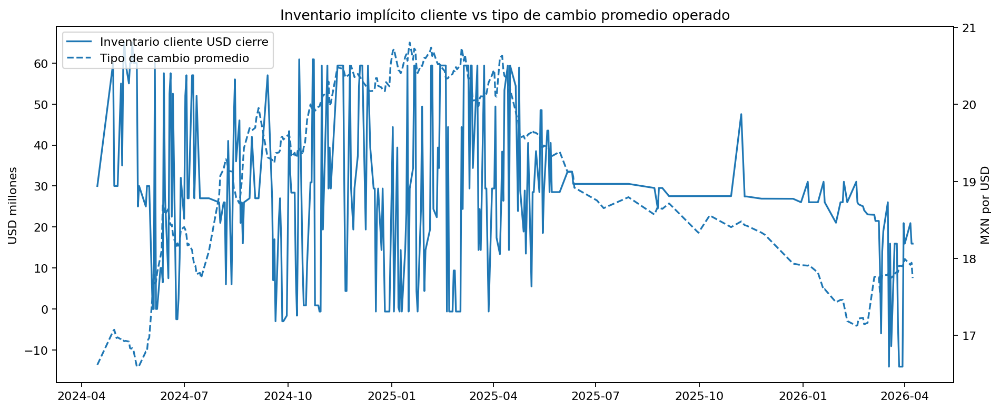
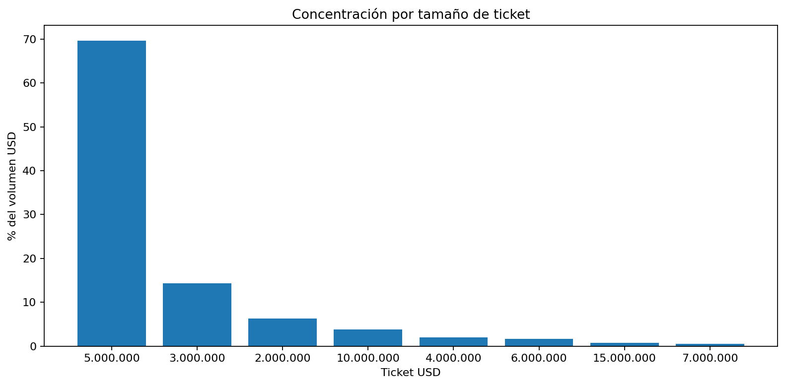

Base: Efactor.xlsx. Este reporte evalúa si la operativa spot es consistente con una lógica de apuesta al tipo de cambio.
Sí hay evidencia operativa consistente con uso especulativo de spot, aunque el archivo por sí solo no permite probar la intención económica final del cliente.
La evidencia más fuerte no es tanto la “capacidad de acertar” la dirección del tipo de cambio, sino la forma de operar: compras y ventas en el mismo día, netos muy pequeños contra volúmenes brutos enormes, cierres muy rápidos de posición y tickets muy estandarizados. Ese patrón es mucho más cercano a trading táctico / apuesta de corto plazo que a una necesidad lineal de cobertura o pago.
Al mismo tiempo, el hit rate direccional del siguiente día no es superior a azar y el P&L implícito agregado de round-trips resulta negativo. Eso sugiere que, si hubo apuesta al tipo de cambio, no necesariamente fue una estrategia consistentemente rentable.
Juicio analítico: la sospecha es materialmente plausible y está bastante soportada por la operativa. Para convertirla en una conclusión de control más fuerte, faltaría cruzar contra comprobantes de underlying (facturas, pagos, cuentas por cobrar/pagar, calendario de fondeo y trazabilidad de liquidaciones).





| Mes | USD cerrado | % mismo día | % <=1 día | P&L MXN |
|---|---|---|---|---|
| 2025-01 | 2.592000e+09 | 0.806078 | 0.982402 | -2.100422e+07 |
| 2025-03 | 1.754609e+09 | 0.616958 | 0.937655 | -4.885860e+07 |
| 2024-06 | 1.731000e+09 | 0.788207 | 0.908990 | 3.250014e+06 |
| 2024-10 | 1.444115e+09 | 0.709698 | 0.928916 | -1.010789e+07 |
| 2025-02 | 1.230391e+09 | 0.574825 | 0.916145 | -8.059426e+06 |
| 2025-04 | 1.175887e+09 | 0.447633 | 0.860129 | -3.983473e+07 |
| 2024-11 | 8.400000e+08 | 0.418949 | 0.815564 | 2.087209e+07 |
| 2026-03 | 7.291686e+08 | 0.715826 | 0.910541 | 8.010018e+06 |
| Ticket USD | Operaciones | Volumen USD | % volumen |
|---|---|---|---|
| 5000000.0 | 4234 | 2.117000e+10 | 0.696519 |
| 3000000.0 | 1453 | 4.359000e+09 | 0.143417 |
| 2000000.0 | 956 | 1.912000e+09 | 0.062907 |
| 10000000.0 | 116 | 1.160000e+09 | 0.038165 |
| 4000000.0 | 148 | 5.920000e+08 | 0.019478 |
| 6000000.0 | 86 | 5.160000e+08 | 0.016977 |
| 15000000.0 | 15 | 2.250000e+08 | 0.007403 |
| 7000000.0 | 20 | 1.400000e+08 | 0.004606 |
| 1000000.0 | 106 | 1.060000e+08 | 0.003488 |
| 9000000.0 | 10 | 9.000000e+07 | 0.002961 |
Nota: el P&L implícito se deriva de empates FIFO entre compras y ventas del cliente. No sustituye el resultado contable oficial ni prueba por sí mismo la intención económica final.